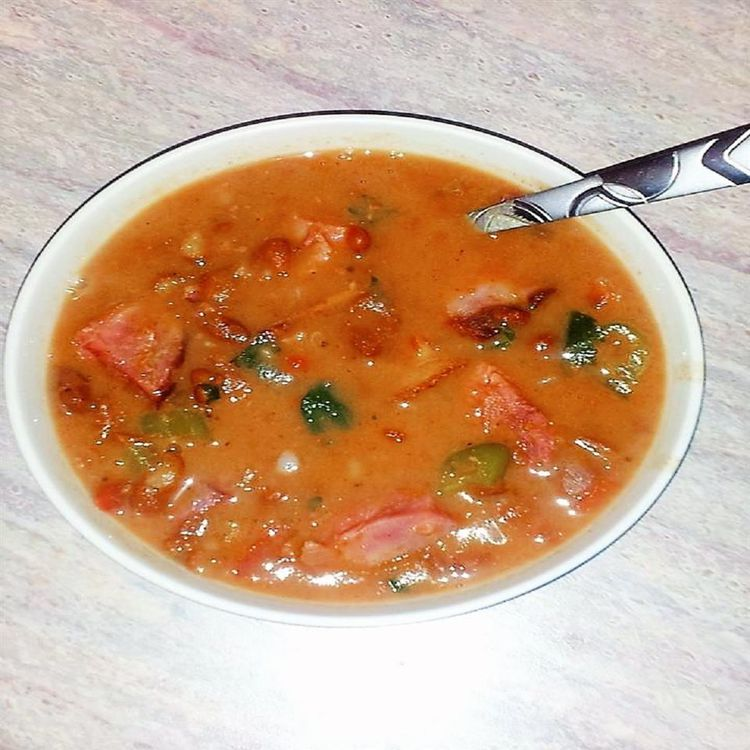

Charro Beans

Description
A hearty Mexican charro bean soup that is perfect for any day of the year.
Ingredients
- Smoke ham hocks.
- Onion.
- Bacon.
- Chorizo.
- Tomatoes.
- Jalapenos.
- Pinto Beans.
- Water.
- Garlic.
- Cilantro.
- Chicken Bouillon Granules.
- Salt.
Steps
- Make the marinade on the stove, then set aside ¼ cup for basting.
- Marinate the salmon in zip-top bags in the refrigerator for up to two hours.
- Broil the salmon until it flakes easily, brushing with the reserved marinade as-needed.
Home